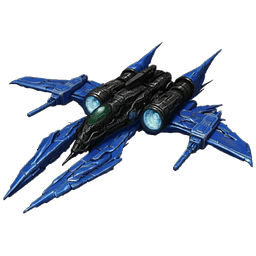
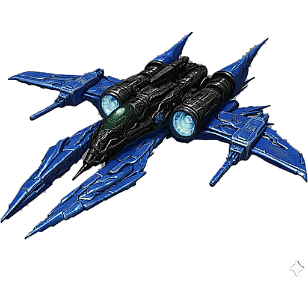
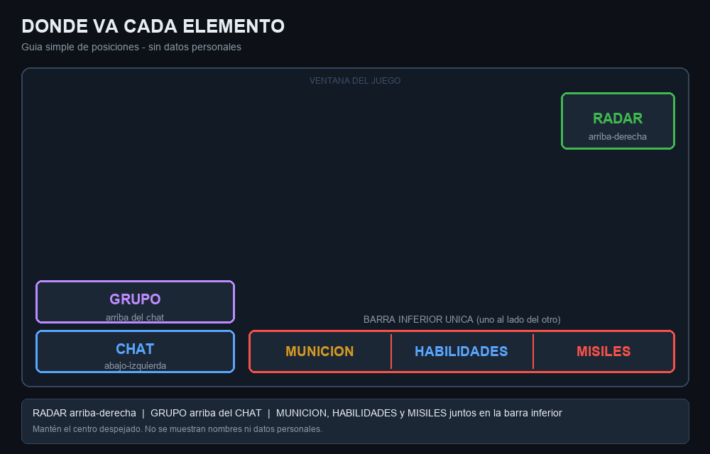

🛸
Naves
Selecciona tu nave equipada y visualiza su imagen con fondo transparente. Nueve modelos listos para aparecer en el panel.

BIBOTOLBIBOTOL reúne en un solo lugar la gestión de tus naves, las fichas de aliens, los controles de combate, el radar inteligente y un sistema de licencias vinculado a tu equipo. Enciende motores en minutos.
Sin instalación · Un solo archivo · Ideal para probar

Diseñado para que el juego y la administración convivan en la misma nave.
Selecciona tu nave equipada y visualiza su imagen con fondo transparente. Nueve modelos listos para aparecer en el panel.
Fichas con nombres e imágenes separadas uno por uno. Sus estadísticas completas quedan guardadas en la base interna.
Disparo continuo con Ctrl, munición principal y SAP en los slots 1-6, y atajos globales F10 / Ctrl+F12.
Navega solo, lee tu posición y patrulla sin cruzar los bordes. Si detecta puntos rojos en el radar, sale a cazarlos.
Captura de pantalla, detección de puntos rojos/azules y lectura de créditos y bitcoin mediante OCR.
Llaves vinculadas al hardware (MAC + IP), panel de administrador, revocación, exportación CSV y duración configurable.
Busca versiones nuevas, verifica el SHA-256 y aplica el parche. El servidor puede fijar una versión mínima obligatoria.
Planes, enlaces de pago y verificación de estado integrados con la pasarela Bold, con historial en la base local.
Ambas opciones incluyen la versión 1.0.6 y el icono de la aplicación.
Un ZIP con el ejecutable listo para usar. No instala nada ni pide permisos de administrador.
Instala en %LOCALAPPDATA%, crea accesos directos e incluye el servidor de actualizaciones.
Radar arriba a la derecha, chat y grupo abajo a la izquierda, munición y misil en la barra inferior.

Baja el portable o el instalador y extrae el contenido.
Abre la pestaña Mi ID de equipo y copia el ID mostrado.
En Administrador, pega el ID, elige la duración y pulsa Generar llave.
Pega la llave en Activar / Verificar y pulsa Validar. ¡Listo para despegar!
No. La llave está vinculada al ID de ese equipo (MAC + IP). Si se copia a otra máquina deja de funcionar automáticamente.
El ID depende también de la IP local, así que al cambiar de red puede variar. Si quieres que dependa solo de la MAC, se puede ajustar.
No. La versión portable y la instalación en %LOCALAPPDATA% funcionan sin elevación de permisos.
En la pestaña Actualización, pulsa Buscar actualizaciones. También puedes activar la búsqueda automática al iniciar.
Sí. Coloca los PNG en assets/ships y assets/aliens con el nombre del modelo en minúsculas. El script prepare_assets.py quita el fondo y los deja listos.